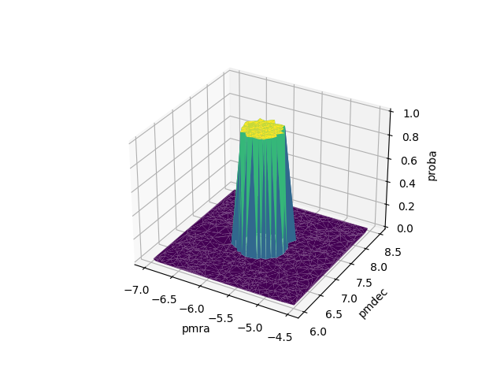
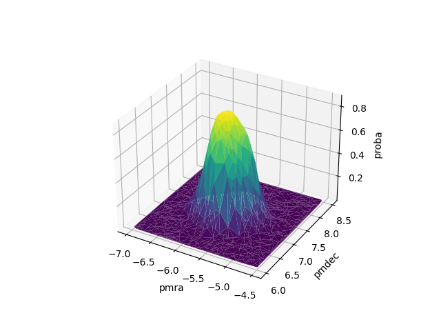

scludam.membership module
Module for Density Based Membership Estimation.
- class scludam.membership.DBME(n_iters: int = 2, kde_leave1out: bool = True, kernel_calculation_mode: str = 'per_class', pdf_estimator: HKDE = HKDE(bw=PluginSelector(nstage=None, pilot=None, binned=None, diag=False), _kernels=None, _weights=None, _covariances=None, _data=None, _n=None, _d=None, _n_eff=None, _eff_mask=None, _maxs=None, _mins=None), n: Optional[int] = None, d: Optional[int] = None, unique_labels: Optional[ndarray[Any, dtype[number]][ndarray[Any, dtype[number]]]] = None, data: Optional[ndarray[Any, dtype[number]][ndarray[Any, dtype[number]]]] = None, estimators: list = NOTHING, iter_priors: list = NOTHING, iter_counts: list = NOTHING, iter_label_diff: list = NOTHING, iter_labels: list = NOTHING, n_classes: Optional[int] = None, labels: Optional[ndarray[Any, dtype[number]][ndarray[Any, dtype[number]]]] = None, counts: Optional[ndarray[Any, dtype[number]][ndarray[Any, dtype[number]]]] = None, posteriors: Optional[ndarray[Any, dtype[number]][ndarray[Any, dtype[number]]]] = None, priors: Optional[ndarray[Any, dtype[number]][ndarray[Any, dtype[number]]]] = None)[source]
Bases:
objectDensity Based Membership Estimation.
It uses
HKDEto estimate the density and calculate smooth membership probabilities for each class, given data and initial probabilities.- Variables
n_iters (int) – Number of iterations, by default 2. In each iteration, prior probabilities are updated according to the posterior probabilities of the previous iteration.
kernel_calculation_mode (str) –
Mode of kernel calculation, by default
per_class. It indicates how manyHKDEestimators will be used to estimate the density. Available modes are:same: the bandwidth of the kernels is the same for all classes. There will be one estimator.per_class: the bandwidth of the kernels is different for each class. There will be one estimator per class.per_class_per_iter: the bandwidth of the kernels is different for each class and iteration. There will be one estimator per class which will be updated in each iteration, recalculating the bandwith each time.
kde_leave1out (bool) – Whether to use leave-one-out KDE estimation, by default True.
pdf_estimator (
HKDE) – Estimator used to estimate the density, by default an instance of HKDE with default parameters.n_classes (int) – Number of detected classes. Only available after the
fit()method is called.labels (Numeric1DArray) – Labels of the classes, only available after the
fit()method is called.counts (Numeric1DArray) – Number of data points in each class, only available after the
fit()method is called.priors (Numeric1DArray) – Prior probabilities of each class, only available after the
fit()method is called.posteriors (Numeric2DArray) – Posterior probabilities array of shape (n_datapoints, n_classes), only available after the
fit()method is called.
Examples
 1import matplotlib.pyplot as plt 2import numpy as np 3from scipy.stats import multivariate_normal 4 5from scludam import DBME, SHDBSCAN 6from scludam.synthetic import ( 7 BivariateUniform, 8 StarCluster, 9 StarField, 10 Synthetic, 11 UniformFrustum, 12 polar_to_cartesian, 13) 14 15# generate some data 16 17fmix = 0.9 18n = 1000 19n_clusters = 1 20cmix = (1 - fmix) / n_clusters 21 22field = StarField( 23 pm=BivariateUniform(locs=(-7, 6), scales=(2.5, 2.5)), 24 space=UniformFrustum(locs=(118, -31, 1.2), scales=(6, 6, 0.9)), 25 n_stars=int(n * fmix), 26) 27clusters = [ 28 StarCluster( 29 space=multivariate_normal(mean=polar_to_cartesian([121, -28, 1.6]), cov=50), 30 pm=multivariate_normal(mean=(-5.75, 7.25), cov=1.0 / 34), 31 n_stars=int(n * cmix), 32 ), 33] 34df = Synthetic(star_field=field, clusters=clusters).rvs() 35 36data = df[["pmra", "pmdec"]].values 37 38# create some random observational error 39random_error = np.random.normal(0, 0.1, data.shape) 40 41# calculate some initial probabilities 42shdbscan = SHDBSCAN( 43 min_cluster_size=150, noise_proba_mode="outlier", auto_allow_single_cluster=True 44).fit(data) 45 46# use DBME to fit HKDE models and calculate membership probabilities 47dbme = DBME().fit(data, shdbscan.proba, random_error) 48print(dbme.posteriors) 49# [[9.45802647e-01 5.41973532e-02] 50# ... 51# [2.77988823e-01 7.22011177e-01]] 52 53# plot to compare initial probabilities with membership probabilities 54shdbscan.surfplot(cols=["pmra", "pmdec"]) 55dbme.surfplot(cols=["pmra", "pmdec"]) 56plt.show()
- fit(data: ndarray[Any, dtype[number]][ndarray[Any, dtype[number]]], init_proba: ndarray[Any, dtype[number]][ndarray[Any, dtype[number]]], err: Optional[ndarray[Any, dtype[number]][ndarray[Any, dtype[number]]]] = None, corr: Optional[ndarray[Any, dtype[number]]] = None)[source]
Fit models and calculate posteriors probabilities.
The method takes data and initial probabilities and creates density estimators. Prior probabilities are taken from the initial probabilities. In each iteration, the method calculates the posterior probabilities of each datapoint using the density estimates and prior probabilites. Also, the method updates the prior probabilities considering the posterior probabilities of the past iteration.
n_iters=1uses prior probabilities as provided in the initial probabilities array.n_iters=2(recommended), updates the prior probabilities once.- Parameters
data (Numeric2DArray) – Data matrix.
init_proba (Numeric2DArray) – Initial posterior probability array. Must be of shape (n_samples, n_classes). This probabilities are used to create the initial density estimators per class.
err (OptionalNumeric2DArray, optional) – Error parameter to be passed to
fit(), by default None.corr (OptionalNumericArray, optional) – Correlation parameter to be passed to
fit(), by default None.
- Returns
Fitted instance of the
DBMEclass.- Return type
- pairplot(**kwargs)[source]
Plot the clustering results in a pairplot.
It uses the
pairprobaplot(). The colors of the points represent class labels. The sizes of the points reresent the probability of belonging to the most probable class.- Returns
Pairplot of the clustering results.
- Return type
seaborn.PairGrid
- Raises
Exception – If the clustering has not been performed yet.
- tsneplot(**kwargs)[source]
Plot the clustering results in a t-SNE plot.
It uses the
tsneprobaplot()function. It represents the data in a 2 dimensional space using t-SNE. The colors of the points represent class labels. The sizes of the points represent the probability of belonging to the most probable class.- Returns
Plot of the clustering results.
- Return type
matplotlib.axes.Axes
- Raises
Exception – If the clustering has not been performed yet.
- scatter3dplot(**kwargs)[source]
Plot the clustering results in a 3D scatter plot.
It uses the
scatter3dprobaplot()function. It represents the data in a 3 dimensional space using the variables given by the user. The colors of the points represent class labels. The sizes of the points represent the probability of belonging to the most probable class.- Returns
Plot of the clustering results.
- Return type
matplotlib.collections.PathCollection
- Raises
Exception – If the clustering has not been performed yet.
- surfplot(**kwargs)[source]
Plot the clustering results in a 3D surface plot.
It uses the
surfprobaplot()function. The heights of the surface and colors of the points represent the probability of belonging to the most probable cluster, excluding the noise class. The data is represented in two dimensions, given by the user.- Returns
Plot of the clustering results.
- Return type
matplotlib.collections.PathCollection
- Raises
Exception – If the clustering has not been performed yet.